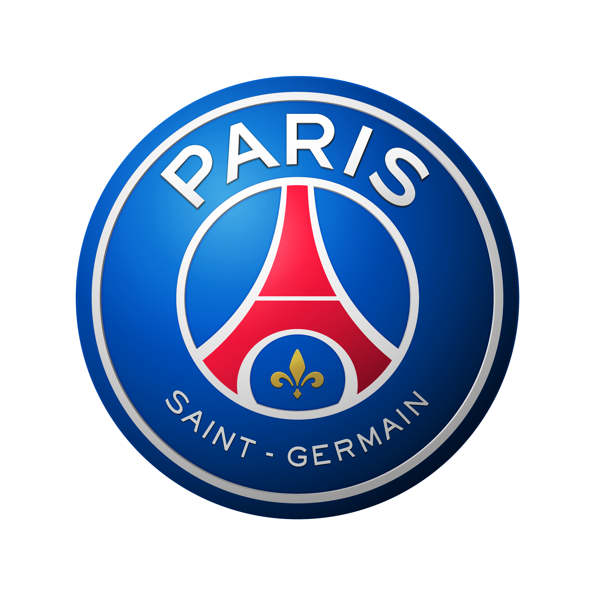

About the club
Paris Saint-Germain is a French professional football club from Paris. It was founded in 1970. The most titled club in the country. Paris Saint-Germain became the champion of France eleven times, won the French Cup fourteen times and the French League Cup ten times.
He plays in Ligue 1, the highest division in the French football league system. The current champion of France, who won his 11th and second consecutive title of the season. Thus, the Parisians beat the former record holder — the Saint-Etienne club, which became champion 10 times.